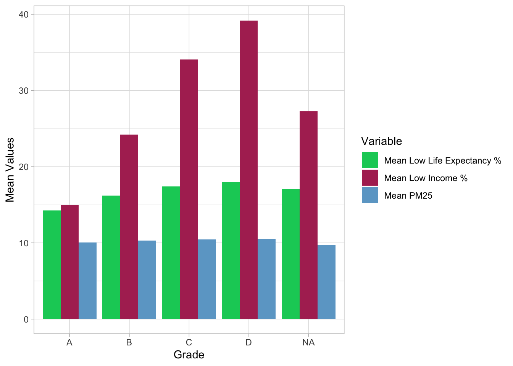
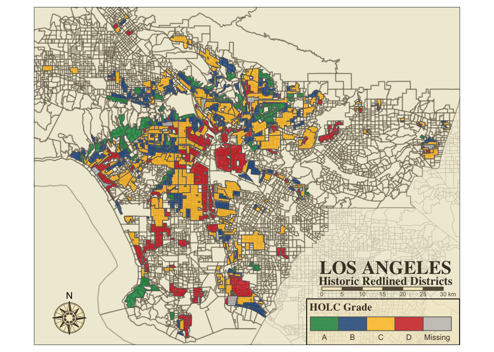
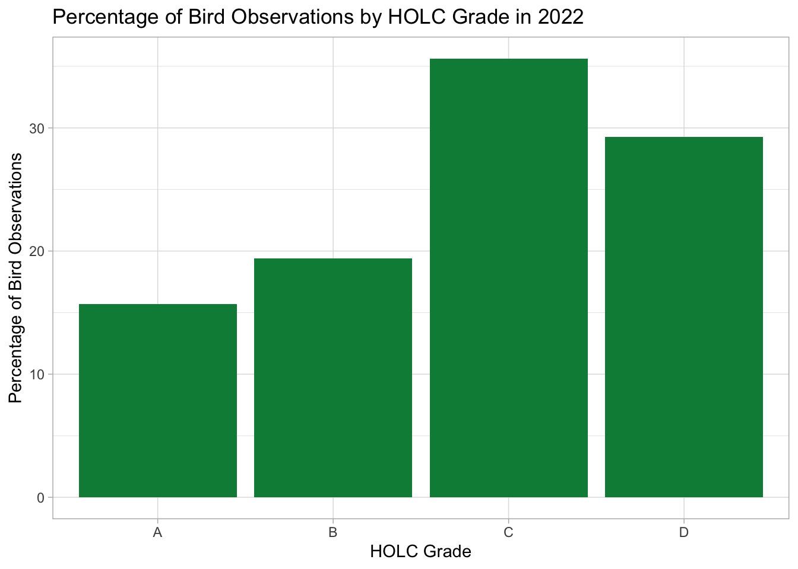
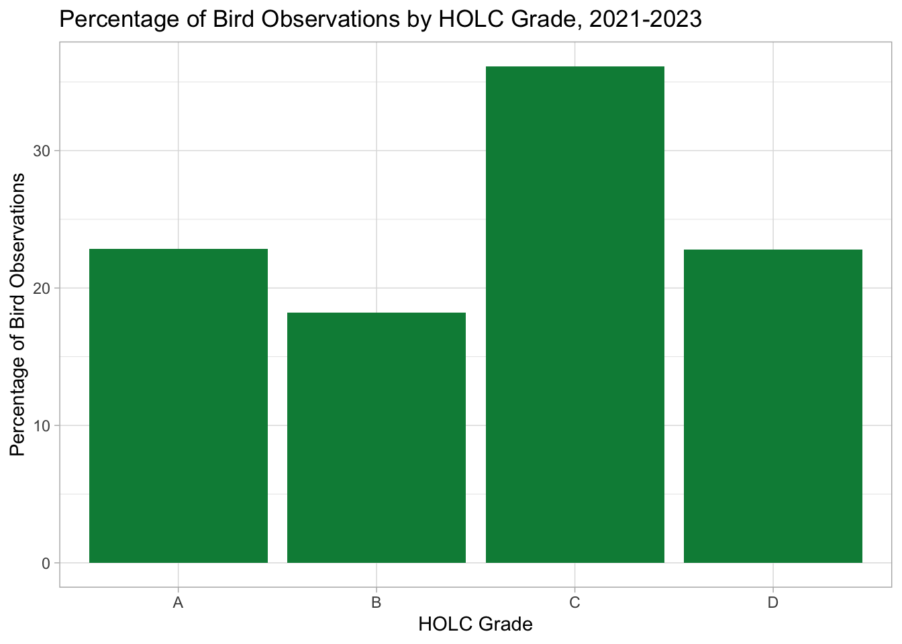
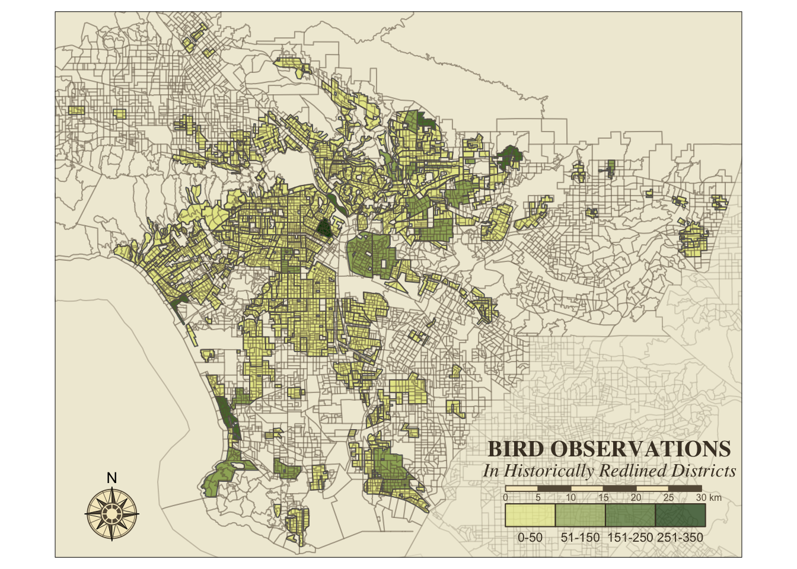

library(sf)
library(tmap)
library(here)
library(terra)
library(stars)
library(stringr)
library(testthat)
library(tidyverse)
library(RColorBrewer)Exploring Patterns of Environmental Justice and Biodiversity in Los Angeles County
Loading libraries
Loading in all data: EJScreen, LA Redlined Districts, LA Biodiversity
ejscreen <- sf::st_read(here::here("data", "ejscreen","EJSCREEN_2023_BG_StatePct_with_AS_CNMI_GU_VI.gdb"), quiet = TRUE)
redlining <- sf::st_read(here::here("data", "mapping-inequality", "mapping-inequality-los-angeles.json"), quiet = TRUE)
biodiversity <- sf::st_read(here::here("data", "gbif-birds-LA", "gbif-birds-LA.shp"), quiet = TRUE)Part 1: Legacy of redlining in current environmental (in)justice
Isolating Los Angeles County and surrounding counties for basemap
los_angeles <- ejscreen %>%
dplyr::filter(CNTY_NAME %in% c("Los Angeles County"))
orange <- ejscreen %>%
dplyr::filter(CNTY_NAME %in% c("Orange County"))
san_bernardino <- ejscreen %>%
dplyr::filter(CNTY_NAME %in% c("San Bernardino County"))Checking for invalid polygons
redlining_valid <- st_is_valid(redlining)
valid <- all(redlining_valid)
if (valid == TRUE) {
print("No invalid polygons")
} else {
print("Contains invalid polygons")
}[1] "Contains invalid polygons"Transforming CRS for redlining and invalid polygons, and checking CRS with los_angeles
redlining <- st_transform(redlining, crs = 3857)
redlining_valid <- st_is_valid(redlining)
valid <- all(redlining_valid)
if (valid == TRUE) {
print("No invalid polygons")
} else {
print("Contains invalid polygons")
}[1] "No invalid polygons"Testing the CRS transform
message("Running CRS check...")
expect_identical(st_crs(los_angeles) == st_crs(redlining), TRUE, label = "true", expected.label = "false")
message("CRS are identical")Calculating the percentages of HOLC district rankings
census_block <- st_join(los_angeles, redlining, join = st_intersects, left = TRUE) %>%
group_by(grade) %>%
summarise(grade_percent = (n()/nrow(los_angeles))*100) %>%
select(grade, grade_percent) %>%
st_drop_geometry()
kableExtra::kable(census_block,
format = "simple",
col.names = c("HOLC Grade",
"Percentage"),
caption = "Grade Percentages of Redlined Districts",
align = "l",
digits = 1)| HOLC Grade | Percentage |
|---|---|
| A | 6.8 |
| B | 18.8 |
| C | 46.4 |
| D | 20.4 |
| NA | 43.9 |
Creating a table for the current EJ conditions of redlined districts, noting PM2.5 levels, mean Low Income percentage, and Mean Life Expectancy percentage.
ej_conditions <- st_join(los_angeles, redlining, join = st_intersects, left = TRUE) %>%
group_by(grade) %>%
summarise(
mean_pm25 = mean(PM25, na.rm = TRUE),
mean_lowincpct = (mean(LOWINCPCT, na.rm = TRUE)*100),
mean_lifeexppct = (mean(LIFEEXPPCT, na.rm = TRUE)*100)) %>%
st_drop_geometry()
kableExtra::kable(ej_conditions,
format = "simple",
col.names = c("HOLC Grade",
"Mean PM2.5 Levels",
"Mean Low Income %",
"Mean Life Expectancy %"),
caption = "Current EJ Conditions Within HOLC Grades",
align = "l",
digits = 1)| HOLC Grade | Mean PM2.5 Levels | Mean Low Income % | Mean Life Expectancy % |
|---|---|---|---|
| A | 10.1 | 15.0 | 14.3 |
| B | 10.3 | 24.2 | 16.2 |
| C | 10.4 | 34.1 | 17.4 |
| D | 10.5 | 39.2 | 18.0 |
| NA | 9.7 | 27.3 | 17.1 |
Manipulating the redlined districts’ EJ data and creating a bar plot
ej_conditions_long <- ej_conditions %>%
pivot_longer(cols = c("mean_pm25",
"mean_lowincpct",
"mean_lifeexppct"),
names_to = "variable",
values_to = "mean_value")
ggplot(ej_conditions_long, aes(x = grade,
y = mean_value,
fill = variable)) +
geom_bar(stat = "identity",
position = "dodge") +
labs(x = "Grade",
y = "Mean Values",
fill = "Variable") +
scale_fill_manual(values = c("mean_pm25" = "skyblue3",
"mean_lowincpct" = "maroon",
"mean_lifeexppct" = "springgreen3"),
labels = c("mean_pm25" = "Mean PM25",
"mean_lowincpct" = "Mean Low Income %",
"mean_lifeexppct" = "Mean Low Life Expectancy %")) +
theme_light()
These results show that both low income and low life expectancy percentages increase with a decreasing HOLC grade. Low income levels are more than twice as high in grade D districts than in grade A. PM2.5 levels are consistent across all districts, which is to be expected. Overall, these results align with the HOLC ranking, unfortunately.
Creating a line object based on los_angeles, in order to change line color Creating Map of redlined districts in Los Angeles county
la_borders <- los_angeles %>% sf::st_cast("MULTILINESTRING")
orange_borders <- orange %>% sf::st_cast("MULTILINESTRING")
sb_borders <- san_bernardino %>% sf::st_cast("MULTILINESTRING")
tm_shape(la_borders,
bbox = redlining) +
tm_lines(lwd = 1.5,
col = "#665A47",
alpha = 0.4) +
tm_shape(redlining) +
tm_polygons(title = "HOLC Grade",
col = "grade",
palette = c("springgreen4",
"dodgerblue4",
"goldenrod1",
"firebrick3"),
alpha = 0.8,
legend.is.portrait = FALSE) +
tm_shape(orange_borders) +
tm_lines(lwd = 1,
col = "#665A47",
alpha = 0.1) +
tm_shape(sb_borders) +
tm_lines(lwd = 1,
col = "#665A47",
alpha = 0.1) +
tm_layout(bg.color = "#F0EBD8",
title = "LOS ANGELES",
title.fontfamily = "times",
title.fontface = "bold",
title.size = 1.6,
title.position = c(0.67, 0.23),
title.color = "#493E2E",
legend.position = c(0.64, 0),
legend.frame = TRUE,
legend.frame.lwd = 1.2,
legend.bg.color = "#F6EAC7",
legend.title.fontfamily = "times",
legend.title.fontface = "bold",
legend.text.color = "#493E2E",
legend.title.color = "#493E2E",
legend.bg.alpha = 0.5) +
tm_credits("Historic Redlined Districts",
size = 1,
col = "#493E2E",
fontfamily = "times",
fontface = "bold",
position = c(0.66, 0.16)) +
tm_compass(type = "rose",
position = c(0.03, 0.03),
color.dark = "#665A47",
color.light = "#F6EAC7",
size = 3) +
tm_scale_bar(text.color = "#665A47",
color.dark = "#665A47",
color.light = "#F6EAC7",
position = c(0.67, 0.13))
Part 2: Legacy of redlining in biodiversity observations
Creating joined dataframe of biodiversity and redlining datasets
biodiversity <- st_transform(biodiversity, crs = 3857)
bio_red_join <- st_join(biodiversity, redlining, join = st_intersects, left = TRUE)Creating table of percentages of bird observations, by HOLC grade
bio_red <- bio_red_join %>%
filter(year == 2022) %>%
group_by(grade) %>%
filter(grade != "NA") %>%
summarise(count_id = n()) %>%
mutate(bird_grade_percent = count_id/sum(count_id)*100) %>%
select(grade, bird_grade_percent) %>%
st_drop_geometry()
kableExtra::kable(bio_red,
format = "simple",
caption = "Percentage of Bird Observations Within Redlined Districts, 2022",
col.names = c("Grade", "Percentage of Observations"),
align = "l",
digits = 1)| Grade | Percentage of Observations |
|---|---|
| A | 15.7 |
| B | 19.4 |
| C | 35.6 |
| D | 29.3 |
Plotting the results from the above table into a barplot
ggplot(bio_red, aes(x = grade, y = bird_grade_percent)) +
(geom_col(fill = "springgreen4")) +
labs(title = "Percentage of Bird Observations by HOLC Grade in 2022",
x = "HOLC Grade",
y = "Percentage of Bird Observations") +
theme_light()
The results show that in 2022, both grades C and D have a higher percentage of bird observations than grades A and B. These results seem to contradict the assigned ranking by the HOLC, as lower rankings are typically associated with fewer green areas and biodiversity. However, this is not a comprehensive look at the biodiversity of those districts, as we only use the data for 2022.
Soto et al. 2023 found that districts with lower rankings have lower numbers of bird observations not because of lower inherent biodiversity, but by a disparity of data about observations in those districts. However our dataset shows otherwise, as grade C has by far the most observations of any grade (47,973 observations). While this is inconsistent with the findings of Soto et al., it is also important to note that our biodiversity dataset may be skewed for the same reason: greater numbers of observations does not necessarily mean greater biodiversity.
__
Creating another table of all the biodiversity data (2021-2023)
bio_red_all <- bio_red_join %>%
group_by(grade) %>%
filter(grade != "NA") %>%
summarise(count_id = n()) %>%
mutate(bird_grade_percent = count_id/sum(count_id)*100) %>%
select(grade, bird_grade_percent) %>%
st_drop_geometry()
kableExtra::kable(bio_red_all,
format = "simple",
caption = "Percentage of Bird Observations Within Redlined Districts, 2021-2023",
col.names = c("Grade", "Percentage of Observations"),
align = "l",
digits = 1)| Grade | Percentage of Observations |
|---|---|
| A | 22.9 |
| B | 18.2 |
| C | 36.1 |
| D | 22.8 |
ggplot(bio_red_all, aes(x = grade, y = bird_grade_percent)) +
(geom_col(fill = "springgreen4")) +
labs(title = "Percentage of Bird Observations by HOLC Grade, 2021-2023",
x = "HOLC Grade",
y = "Percentage of Bird Observations") +
theme_light()
Counting the total number of observations in each grade from the entire biodiversity dataset
count_bio <- bio_red_join %>%
group_by(grade) %>%
summarise(count = n()) %>%
st_drop_geometry()
kableExtra::kable(count_bio,
format = "simple",
col.names = c("Grade", "Total Observations"),
caption = "Total Observations by Grade",
align = "l")| Grade | Total Observations |
|---|---|
| A | 30345 |
| B | 24198 |
| C | 47973 |
| D | 30246 |
| NA | 1156104 |
Adding the total bird observations from each district in 2022 into a column on the redlined districts dataset, for plotting
la_bio <- bio_red_join %>%
filter(year == 2022) %>%
filter(grade != "NA")
intersections <- st_intersects(redlining, la_bio)
redlining$bird_count <- sapply(intersections, length)Creating map of bird observations in redlined districts in 2022
custom_breaks <- c(0, 51, 151, 251, 350)
tm_shape(redlining) +
tm_polygons(title = " ",
col = "bird_count",
breaks = custom_breaks,
palette = c("#E6E696", "#0E4209"),
legend.show = FALSE) +
tm_shape(la_borders) +
tm_lines(lwd = 1,
col = "#665A47",
alpha = 0.3) +
tm_shape(orange_borders) +
tm_lines(lwd = 1,
col = "#665A47",
alpha = 0.1) +
tm_shape(sb_borders) +
tm_lines(lwd = 1,
col = "#665A47",
alpha = 0.1) +
tm_layout(bg.color = "#F0EBD8",
title = "BIRD OBSERVATIONS",
title.fontfamily = "times",
title.fontface = "bold",
title.size = 1.2,
title.position = c(0.63, 0.20),
title.color = "#493E2E") +
tm_add_legend(type = "fill",
labels = c("0-50",
"51-150",
"151-250",
"251-350"),
col = c("#E6E796",
"#9EB067",
"#557937",
"#0E410B" ),
border.col = "#493E2E",
title = " ",
is.portrait = FALSE,
alpha = 0.7) +
tm_legend(position = c(0.65, 0.015),
text.color = "#493E2E") +
tm_credits("In Historically Redlined Districts",
size = 1,
col = "#493E2E",
fontfamily = "times",
fontface = "italic",
position = c(0.615, 0.13)) +
tm_compass(type = "rose",
position = c(0.03, 0.03),
color.dark = "#665A47",
color.light = "#F6EAC7",
size = 3) +
tm_scale_bar(text.color = "#665A47",
color.dark = "#665A47",
color.light = "#F6EAC7",
position = c(0.65, 0.09))